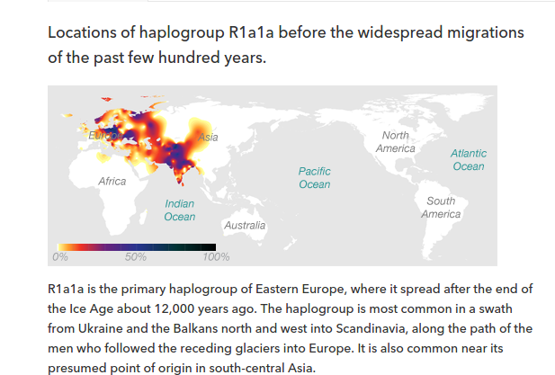

Migratory hypotheses
- Out of Africa routes
- NatGeo 2011.
Genetics
- Neanderthal ancestry accounts for less than ~2 percent of your DNA. “Out of the 2,872 variants we tested, we found 225 variants in your DNA that trace back to the Neanderthals.”
R1a1a* (Paternal)

Descent (23andme 2017)
- A
- 275,000 Years Ago
- F-M89
- 76,000 Years Ago
- K-M9
- 53,000 Years Ago
- R-M207
- 35,000 Years Ago
- R-M420 (R1a)
- 25,000 Years Ago
- R-SRY1532.2 (R1a1)
- R-M17/M198 (R1a1a)
- “R-M198, a lineage that is common in people of Ashkenazi Jewish descent. Research suggests that Ashkenazi Jews who belong to your haplogroup may descend from a single male who introduced the R-M198 lineage into the Ashkenazi gene pool in the first millennium C.E. This man may have been a member of the Khazars, an enigmatic Turkic tribe that lived in Central Asia, and that converted to Judaism in the 8th century AD under King Bulan.”
- R-M512 snp
- “Today, the men who share your haplogroup are most common in Eastern Europe, Russia and Ukraine. The lineage is also quite common in Poland, but decreases in frequency toward the Mediterranean countries. Farther to the west, about one-third of Norwegian men and a quarter of men from the far northern British Isles carry R-M512. Their ancestors arrived with various groups over the past 2,000 years, including with the Anglo-Saxons from central Europe in the 5th century and the Vikings who came from Scandinavia beginning about 800 CE. Additionally, the haplogroup is still relatively common in the Middle East, as well as in Central and South Asia where it reaches levels of up to 60% among the Kyrgyz and the Tajiks.”
R30a (Maternal line) Haplogroup: R, a subgroup of N
- Distribution
- Haplogroup R
- R arose in the Near East about 60,000 years ago, not long after humans first spread out of Africa into southwestern Asia.

{kind=link}
गोत्रादिकम्
- भार्गव-च्यावन-आप्नवान-और्व-जामदग्न्य-प्रवरः।
- भार्गवविषयोऽत्र।
- ಹೆಬ್ಬಾರ್ ಅಯ್ಯಂಗಾರ್ ಎಮ್ಬ ಸಮುದಾಯವು. ಹೆಬ್ಬಾರ-ಶಬ್ದದ ಉತ್ಪತ್ತಿಯು - ಇಲ್ಲಿ ಪದಾರ್ಥಚಿನ್ತಾಮಣಿಯಲ್ಲಿ (ಹೆಬ್ಬ ಹರುವ. ಪಾರ್ → ನೋಡು ಪಾರ್ಪನು → ಹಾರುವನು / ಹರುವ. ).